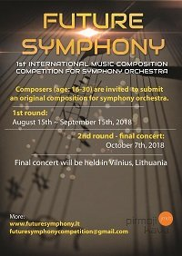

FUTURE SYMPHONY
INTERNATIONAL MUSIC COMPOSITION COMPETITION
FOR SYMPHONY ORCHESTRA
INTERNATIONAL MUSIC COMPOSITION COMPETITION
FOR SYMPHONY ORCHESTRA


Welcome!
We are happy to announce the first international music composition competition for symphony orchestra “Future Symphony”. The goal of the competition is to expand our cultural heritage and to foster symphonic music tradition. We encourage young composers to try out their luck by creating a short orchestral composition (5-12 min.). Authors from all over the world (age: 16-30) are welcome to apply.
Main information:
Main information:
- Entry fees must be paid by July 15th, 2018, all scores must be submitted by August 15th, 2018;
- Pieces that will be selected for the final concert will be performed by an orchestra which is brought together for this competition. The competition provides a great opportunity for composers to hear their own compositions for symphony orchestra performed live and get professional recordings of them;
- All composers stay anonymous until the final results;
- Application fee is 50 euros;
- The Prize pool contains 1000 euros and professional recordings of the scores.
News

October 8th, 2018 - 08:00 pm
Results of the final round
We are excited to announce the winners of the 1st international music composition competition "Future Symphony"!
1st place: 🇨🇳️ Xiaoran Jiang (Befall)
2nd place: 🇰🇷️ SiHyun Uhm (Apex of Longing), 🇺🇸️ Robert Ge (Night Run)
3rd place: 🇨🇳️ Pengyi Li (Polymorphim)
Audience Sympathy prize: 🇱🇹️ Matas Drukteinis (Late Night at the City)
Biggest congratulations to the composers!
Read more
We are excited to announce the winners of the 1st international music composition competition "Future Symphony"!
1st place: 🇨🇳️ Xiaoran Jiang (Befall)
2nd place: 🇰🇷️ SiHyun Uhm (Apex of Longing), 🇺🇸️ Robert Ge (Night Run)
3rd place: 🇨🇳️ Pengyi Li (Polymorphim)
Audience Sympathy prize: 🇱🇹️ Matas Drukteinis (Late Night at the City)
Biggest congratulations to the composers!
Read more

September 1st, 2018 - 06:00 pm
Results of the Ist round
Our jury did an outstanding job at choosing the scores for the final round in the most professional way. We are happy to announce 7 participants whose works have been selected: 🇱🇹 Matas Drukteinis, 🇺🇸️ Robert Ge, 🇨🇳 Xiaoran Jiang, 🇱🇹 Aleksej Kalinin, 🇨🇳 Pengyi Li, 🇬🇪 Giorgi Papiashvili, 🇰🇷️ SiHyun Uhm.
Congratulations to the composers! Their symphonic pieces will be performed live on the 7th of October in the St. Catherine's church, Vilnius.
Read more
Our jury did an outstanding job at choosing the scores for the final round in the most professional way. We are happy to announce 7 participants whose works have been selected: 🇱🇹 Matas Drukteinis, 🇺🇸️ Robert Ge, 🇨🇳 Xiaoran Jiang, 🇱🇹 Aleksej Kalinin, 🇨🇳 Pengyi Li, 🇬🇪 Giorgi Papiashvili, 🇰🇷️ SiHyun Uhm.
Congratulations to the composers! Their symphonic pieces will be performed live on the 7th of October in the St. Catherine's church, Vilnius.
Read more
August 16th, 2018 - 03:00 pm

Start of the Ist round of the competition “Future Symphony”
Finally, the registration to the competition “Future Symphony” has been closed. We are thrilled to say we got 14 applications from very talented composers all over the world! The first round begins on August 16th and our jury will have 15 days to pick the best symphonic pieces for the final concert. The results will be published on the 1st of September.
Read more
Finally, the registration to the competition “Future Symphony” has been closed. We are thrilled to say we got 14 applications from very talented composers all over the world! The first round begins on August 16th and our jury will have 15 days to pick the best symphonic pieces for the final concert. The results will be published on the 1st of September.
Read more
April 14th, 2018 - 03:00 pm
Registration to the “Future Symphony” competition opens on April 15th 2018
We are happy to announce registration to the first international music composition competition for symphony orchestra “Future Symphony”. Applications are welcome from April 15th until August 15th 2018. The entry fee must be paid by July 15th, 2018. Read more
We are happy to announce registration to the first international music composition competition for symphony orchestra “Future Symphony”. Applications are welcome from April 15th until August 15th 2018. The entry fee must be paid by July 15th, 2018. Read more
Regulations
Apply to competition
Composers who are willing to participate in the competition must submit:
by July 15th 2018:
You will find the application form by clicking here.
By sending the application you agree with the Regulations of the competition.
by July 15th 2018:
- the application form;
- a copy of payment confirmation.
- a composition score in PDF format;
- MP3 audio file (created with a music notation software);
- a photo of the participant.
You will find the application form by clicking here.
By sending the application you agree with the Regulations of the competition.
Contacts
Event organizers:
Public institution „Pirmoji Kava“ – www.jmr.lt
Project managers:
Adomas Morkūnas-Budrys
Danielius Tuita
Džiugas Sabonis
Orchestra manager:
Danielius Tuita
Džiugas Sabonis
Džiugas Daugirda
E-mail:
Facebook:
Web design:
Cornelius Kummer – www.corneliuskummer.de